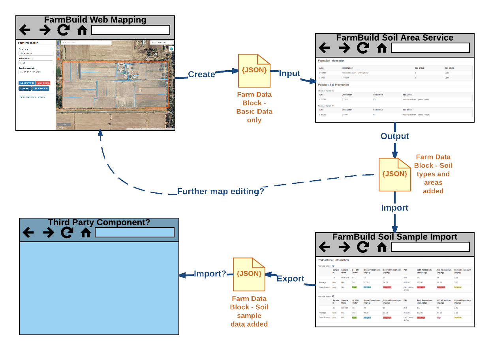

FarmBuild Farm Data
The FarmBuild components, including the web services and the Javascript based API sample code, deal with a common view of a farm comprising one or more paddocks and these paddocks optionally grouped into paddock groups. The farm itself and the paddocks are each represented by a polygon, along with a name, area and possibly other information. There are a number of examples of Farm Data Blocks in the FarmBuild GitHub repositories, such as this one.
Although each component is built to be stand alone, it is expected that two or more of the components may be used together to support a number of steps in a user process. For example, you may wish to have a farmer first draw their farm and it's paddocks, and then use the soil area calculation service to determine the soil types by area within the farm and each of the paddocks.
To facilitate the integration of the various components, a standard data model of a farm has been developed as part of FarmBuild, to serve as the shared block of data to be created, used by and passed between the components. This Farm Data Block is passed into web services or loaded into the Javascript APIs, the farm data is parsed and used by the service or API and any data generated is added into the Farm Data Block, before it is passed back from the web service or exported out of the API.
Although this Farm Data Block has been designed to meet the needs of the FarmBuild components in the first instance, it is hoped that in the future, it will be used to integrate with other software components and services, being extended as required. The diagram below illustrates how the Farm Data Block may be created by and used in FarmBuild and potentially third party software components.
Details of the Farm Data Block and it's associated Javascript API can be found in the FarmBuild Farm Data GitHub repository and it's wiki.
Where relevant, each of the FarmBuild components documents how it makes use of the Farm Data Block - what it requires as an input and what it writes in to the data block as it's output. The FarmBuild web mapping component enables new Farm Data Blocks to be created, exported and saved.
The Farm Data Block is a JSON (Javascript Object Notation) structure, making it easy to use in Javascript but also now the defacto standard for use with REST web services. The Farm Data Block makes use of the GeoJSON standard for storing spatial features. Although the Farm Data Block itself is not GeoJSON (since it needs to hold a wider range of data than spatial), the farm and paddock entities contain a "geometry" element that is standard geoJSON. This makes it easy to transform the Farm Data Block into GeoJSON, although doing so necessarily discards some of the farm data that is not directly related to the farm and paddock features. The FarmBuild web mapping component includes buttons to export the Farm Data Block to GeoJSON and to KML.
Note that it is not intended that third party software applications that use FarmBuild components will store data in the Farm Data Block structure persistently. It is more likely they will store the farmer's data in a custom set of database tables and transform this data into and out of the Farm Data Block structure as they call FarmBuild components.